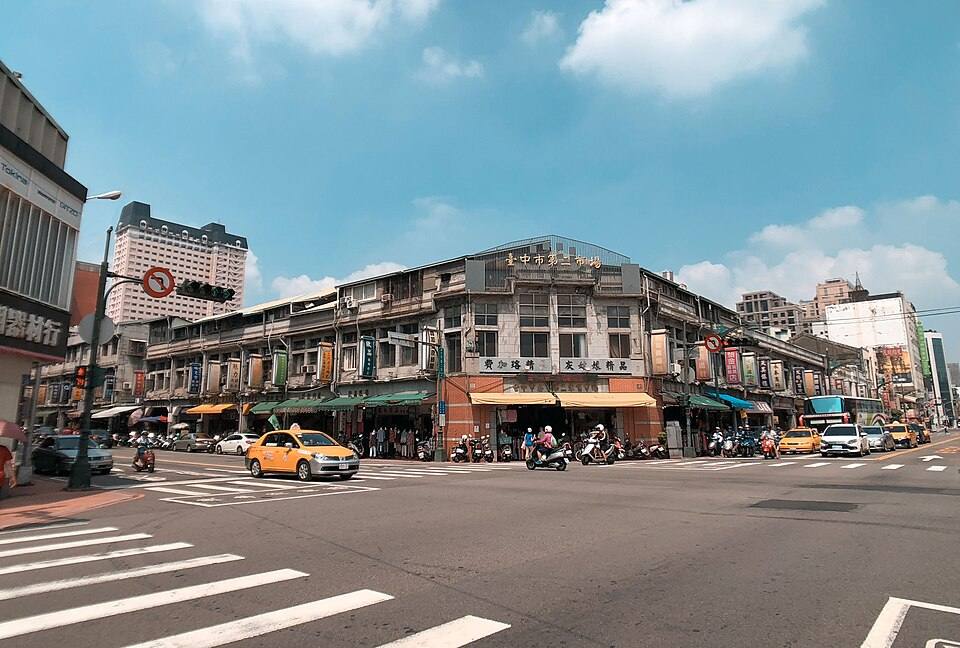

歡迎來到《食事求市》

圖片來源： Daniel551727／Wikimedia Commons （ CC BY-SA 4.0 ，未修改）
《食事求市》是我們以台中第二市場為主題製作的綜藝節目。 我們希望透過輕鬆、有趣的方式，帶大家認識這座充滿歷史的傳統市場， 一起探索市場裡的美食、文化與特色。
節目精彩看點
跟著我們的鏡頭走進第二市場， 看看市場裡有哪些值得探索的地方， 也一起感受拍攝過程中的歡樂氣氛！
了解更多節目內容分鏡腳本
想知道《食事求市》預計怎麼拍攝嗎？ 我們規劃了節目開場、200元美食挑戰、 市場探索等內容，一起來看看我們的拍攝構想！
查看分鏡腳本